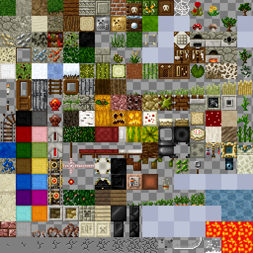
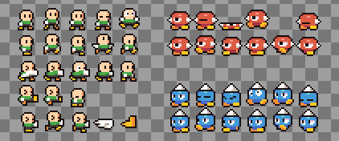
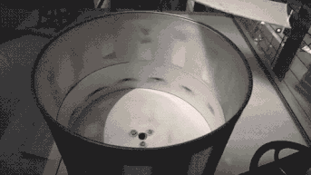

Check out this demo first (Click it!):
Yes, it’s the Twitter heart button. This heart animation was done using an old technique called sprite sheets.
On the web sprite sheets are used mainly to reduce the amount of HTTP requests by bundling multiple images together into a single image file. Displaying a sub-image involves clipping the sheet in the appropriate coordinates.

Sprite sheet / texture atlas of Minecraft blocks
The bandwidth benefit has been largely mitigated by HTTP/2 now, but sprite sheets have another purpose: animations! Displaying animations is one of the primary uses of sprite sheets, besides loading performance.

Characters w/ animations, sprite sheet by GrafxKid
It’s neat for small raster-based animations such as loading spinners, characters, icons, and micro-interactions.
How
Assumming you already have a sprite sheet image and coordinates in hand, all you need is a way to clip that image for display. There are a few ways to clip an image in CSS.
| method |
coordinates via |
background-image |
background-position |
overflow: hidden with nested <img> |
left, top on the nested element |
clip-path |
clip-path, left, top |
The left and top rules can be substituted for transform: translate(…).
The background-image way is the most convenient since you only need one element.
.element {
background-image: url('heart.png');
/* size of one frame */
width: 100px;
height: 100px;
/* size of the whole sheet */
background-size: 2900px 100px;
/* coordinates of the desired frame (negated) */
background-position: -500px 0px;
}
This is the sprite sheet for the heart animation from Twitter:
Using this image, the code above produces a still image of the frame at (500,0)—the sixth frame.
Removing the clipping method reveals that it’s just a part of the whole sheet (this view will be fun when it’s actually animating):
If the sprite sheet wasn’t made to be animated, that is, if it was just a collection of multiple unrelated sub-images like the Minecraft example earlier, then the CSS rules above are all we need to know. That’s it.
Since this sprite sheet was made to be animated, that is, it contains animation frames, more needs to be done.
To animate this, we animate the background-position over each frame in the sequence, flashing each frame in quick succession.
.element {
background-image: url('heart.png');
/* size of one frame */
width: 100px;
height: 100px;
/* size of the whole sheet */
background-size: 2900px 100px;
- /* coordinates of the desired frame (negated) */
- background-position: -500px 0px;
+ /* animate the coordinates */
+ animation: heartAnimation 2s steps(29, jump-none) infinite;
+}
+
+@keyframes heartAnimation {
+ from {
+ /* first frame */
+ background-position: 0px 0px;
+ }
+ to {
+ /* last frame */
+ background-position: -2800px 0px;
+ }
+}
Important: Note the steps() timing function in the animation rule above! This is required for the transition to land exactly on the frames.
Voilà.
And the view without clipping:

It’s like a zoetrope
The exact parameters for the steps() function are a bit fiddly and it depends on whether you loop it or reverse it, but here’s what worked for the heart animation with 29 total frames.
animation-timing-function: steps(29, jump-none);
Using any other timing function results in a weird smooth in-betweening movement like this:
Remember, steps() is crucial!
Why not APNG?
For autoplaying stuff like loading spinners, you might want plain old GIFs or APNGs instead.
But we don’t have tight control over the playback with these formats.
With sprite sheets, we can pause, reverse, play on hover, change the frame rate…
…make it scroll-driven,
Note: Scroll-driven animations are experimental. No Firefox support atm.
… or make it interactive!
Interactivity
The nice thing about this being in CSS is that we can make it interactive via selectors.
Continuing with the heart example, we can turn it into a stylised toggle control via HTML & CSS:
.element {
background-image: url('heart.png');
/* size of one frame */
width: 100px;
height: 100px;
/* size of the whole sheet */
background-size: 2900px 100px;
+ }
+
+.input:checked ~ .element {
/* animate the coordinates */
- animation: heartAnimation 2s steps(29, jump-none) infinite;
+ animation: heartAnimation 2s steps(29, jump-none) forwards;
}
@keyframes heartAnimation {
from {
/* first frame */
background-position: 0px 0px;
}
to {
/* last frame */
background-position: -2800px 0px;
}
}
Or use the new :has(:checked).
Additionally, CSS doesn’t block the main thread. In modern browsers, the big difference between CSS animations and JS-driven animations (i.e. requestAnimationFrame loops) is that the JS one runs on the main thread along with event handlers and DOM operations, so if you have some heavy JS (like React rerendering the DOM), JS animations would suffer along with it.
Of course, JS could still be used, if only to trigger these CSS sprite animations by adding or removing CSS classes.
Why not animated SVGs?
If you have a vector format, then an animated SVG is a decent option!
This format is kinda hard to author and integrate though—one would need both animation skills and coding skills to implement it. Some paid tools apparently exist to make it easier?
And Lottie? That 300-kilobyte library? Uh, sure, if you really need it.
Limitations of sprite sheets
- The sheet could end up as a very large image file if you’re not very careful.
- It’s only effective for the narrow case of small frame-by-frame raster animations. Beyond that, better options may exist, such animated SVGs, the
<video> tag, the <canvas> tag, etc.
- How do you support higher pixel densities? Media queries on
background-image? <img> with srcset could work, but the coordinates are another matter. But it could be solved generally with CSS custom properties and calc.
Gallery
‘Favorite’ icon animation
Snail enemy sprites from my game MiniForts
I actually had to implement these hover animations via sprite sheets at work.
Behind the scenes